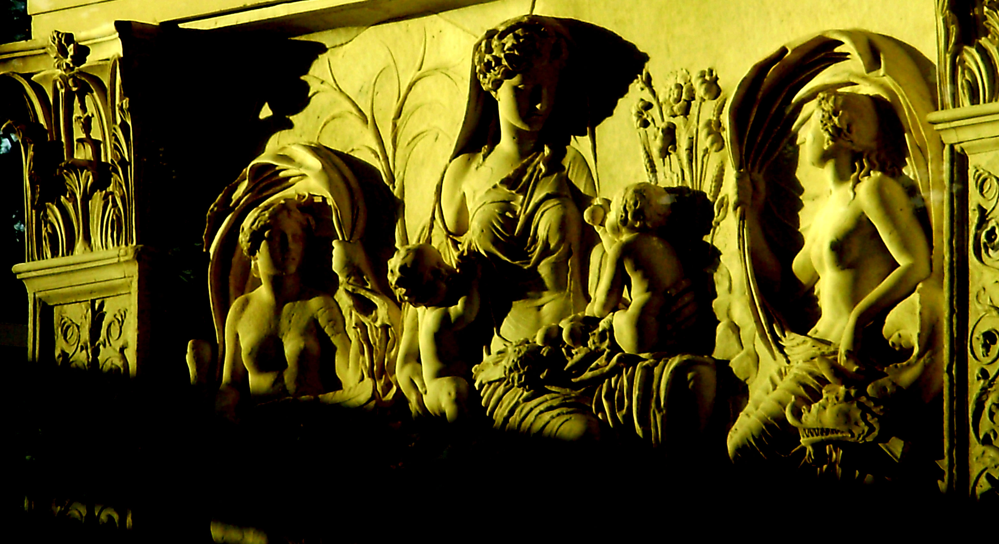

The previous chapter examined several examples of “failed” architecture in the Aeneid. These included in particular the constructed caves and the artful labyrinths meant to cover over and contain chaotic forces and elements of the past that would upset any established order imposed upon them. It is now time to see what this analysis brings to bear on how one might understand the monumenta in the poem and ultimately the monumental architexture of epic itself.
Part 1 of this chapter will analyze three of the poem’s monumenta, namely, those on Crete that Anchises mentions in Book 3, those embodied by the Minotaur in Book 6, and those at the site of Rome that Evander shows to Aeneas in Book 8. By putting these monumenta within the context of the other architectural structures of the poem discussed in Chapter IV it becomes possible to see that they too are often unsuccessful in achieving a stable meaning, revealing the “cracks” in their epistemological foundations.1 These “failed” monuments should alert the reader to the instability of meaning inherent to monuments that has the potential to upset any stable narrative of the past (and future) that the monuments of the Augustan age – whether Augustus’ or that of the Aeneid itself – might try to establish.
Part 2 will then build upon the conclusions reached regarding architectural boundaries and monuments in the poem in order to arrive at a definition of Vergil’s own architexture. Whereas Horace sought to stabilize the borders of his genre while subtly introducing extrageneric and novel material, Vergil’s poem shows us in contrast how the external facade of epic that he places upon his story of Rome is unstable: his epic frame cannot ultimately keep the chaotic forces of the Roman past from breaking through and disrupting a tidy teleological narrative from Aeneas to Augustus. An analysis of the monumenta on the Baldric of Pallas – read often as a mise-en-abyme for the poem itself – will serve to weave together the threads of thought from the preceding section and allow us to arrive at some general conclusions regarding the poem’s overall architextural structure. Like the frame of the baldric, I propose, the poem as a monument of Roman history fails to contain the chaos (actual and epistemological) that is a significant component of Rome’s story as Vergil tells it – a failure that is most apparent when Aeneas slaughters the injured and defenseless Turnus after seeing the baldric. It might then appear based on this reading that the Aeneid itself is just as much a “failed” monumentum as the ones that it contains.
Yet, as I argue in Part 3, it is the very “failure” of the Aeneid as a monument that perhaps makes it a monumental success in the way in which the poem causes its readers to reflect upon the nature of monuments. What the Aeneid suggests is not that the instability of meaning makes all monumenta failures, per se, but that to appreciate a monument fully and learn all it has to tell us about the past we need be aware of the multiplicity of meanings that lie underneath what appears on its magnificent exterior. It is in this way, in fact, that I argue the poem can illustrate for its readers that the very power of a monument actually lies not only in its apparent stability (literal and epistemological) that Horace stressed, but also in the awareness on the part of the spectator of the monument’s capacity to fail – without which the “immortality” that a monument promises would have little meaning. As I suggest in concluding, moreover, this same polysemy of monuments did not escape Augustus, either, in his use of monuments in the Res Gestae to remember Rome’s own chaotic past – good and bad – while simultaneously giving his subjects hope for a better present and future. The nuanced way that the princeps describes the Temple of Janus in particular provides an interesting parallel to the sophisticated architextural monumentum that the Aeneid represents.
Part 1. Vergilian Monumenta
The previous chapter briefly mentioned the monumenta that Evander shows to Aeneas in Book 8. These are the only monumenta in the poem that are strictly architectural. At the same time, though, the poem is filled with several non-architectural monumenta that require attention for understanding what kind of monument the epic poem itself can be said to represent.2 This part of the present chapter will analyze a few of the most important monumenta in the poem before turning at last to the structures found at the proto-Rome of Evander. This brief survey will demonstrate not only that these monuments “fail” to maintain a stable meaning; it will also show, more importantly, that this instability of meaning leads to the kind of chaos and errores of the past that the failed structures examined in Chapter IV also could not contain.
The very first time that word monumentum appears in the poem should not inspire confidence in the reader for the ability of “monuments” to present a stable and unambiguous meaning. When the Trojans are trying to decode Apollo’s prophecy that they should “seek their ancient mother” (antiquam exquirite matrem, Aen. 3.96), Anchises calls upon monumenta in order to find a solution to the puzzle:
tum genitor ueterum uoluens monumenta uirorum “audite, o proceres,” ait “et spes discite uestras. Creta Iouis magni medio iacet insula ponto, mons ldaeus ubi et gentis cunabula nostrae. (Aen. 3.102-1065
“Hear me, leaders,” said my father, revolving in his mind the monumenta of ancient men, “and learn what you can hope for. Crete lies in the middle of the sea, the island of mighty Jove, where there exists a Mt. Ida and the cradle of our race.
Aeneas’ father advises the Trojans to go to Crete where they can find their origins, that is, their cunabula (“cradle,” 105). This is the place, Anchises continues, where Cybele’s cult originated with its brazen symbols (cf. 3.111). The founder of Troy himself first came from this island, too – if Anchises remembers correctly (si rite audita recordor, 107) – and “therefore” (ergo, 114) it must be where the Trojans should found their city. This is not the right interpretation of Apollo’s prophecy, of course. What one should note here is the fact that it is specifically monumenta that cause Anchises to make such a mistake. They lead him and his fellow Trojans, in other words, to continue the errores that they have endured to that point since departing from the shores of Troy.
The very first set of monumenta in the poem is thus a “failure.” Anchises’ mistake illustrates for the reader not just that monuments fail to provide their interpreters with a clear message; more than that, the failure here demonstrates that these structures can mislead their interpreters, too, as happens with the Trojans when they try impose their own meanings and desires upon them. The passage suggests, in other words, that the failure of a monument to achieve a single, stable meaning allows for the weary Trojans to fit these monuments – regardless of their original meaning – into an interpretation that on the one hand suits their desire for a new home, but on the other is still geared to their past and thus leads them away from arriving at their new future.3
An even more complicated “monument” is the one which the labyrinth on Daedalus’ Doors both hides and makes its viewers remember, namely, the Minotaur represented in the carvings and labeled as the Veneris monumenta nefandae (Aen. 6.21),4 as discussed in the previous chapter.5 These monumenta are of particular importance since they present in an explicit way both the attempt to control the past through monumental structures and the failure of that effort.6 Here is the passage again in full:
hic crudelis amor tauri suppostaque furto Pasiphae mixtumque genus prolesque biformis Minotaurus inest, Veneris monimenta nefandae, hic labor ille domus et inextricabilis error.
magnum reginae sed enim miseratus amorem Daedalus ipse dolos tecti ambagesque resoluit, caeca regens filo uestigia. (Aen. 6.25-31)
Here is displayed the cruel love of a bull, here Pasiphae placed beneath [it] secretly, here the mixed race and two-formed offspring, the Minotaur, the monumenta of a criminal Venus. Here is displayed that toil of the house and the inescapable error. But indeed Daedalus himself taking pity on the queen’s great love unlocks the tricks and twists of the house, leading blind footsteps with a string.
To label the Minotaur as the “monumenta of a criminal Venus” would seem to exonerate Daedalus in the narrative he presents. As William Fitzgerald has suggested, in fact, the “configuration is notable for its absolute lack of Daedalus, who does not feature in Pasiphae’s escapade.”7 Indeed, although the master craftsman was the one who built the cow which allowed Pasiphae to copulate with the bull, he appears nowhere in this part of the doorframe. By presenting the story in this way, then, Daedalus is able to elide his own role from the Minotaur’s conception – making the creature the fault of a Veneris…nefandae (27). At the same time, however, by representing the Minotaur at all the artist fails to keep hidden the horrors of his own past. Instead of allowing this evil to lie concealed in the past Daedalus instead monumentalizes it for all to see and thus forever keeps his own errores on display regardless of the label that is given to the creature.8 The architect cannot escape from the horrible mistakes of his past even by providing a frame that re-interprets them in a way more sympathetic to him. Aestheticizing the past through monumenta cannot fully hide Daedalus’ mistakes, in other words, no matter how brilliant and mesmerizing those monumental golden doors appear.
Before we move on to examining the monumenta of proto-Rome it seems relevant to note that while Daedalus’ selective depiction of the past can only be inferred from the passage discussed above, it becomes abundantly clear in the way that the master craftsman depicts (or rather does not depict) his dead son Icarus on the same doors.
…Tu quoque magnam partem opere in tanto, sineret dolor, Icare, haberes. bis conatus erat casus effingere in auro, bis patriae cecidere manus… (Aen. 6.30-33)
You too would have an important part in so great a work, Icarus, were grief to allow it. Twice [Daedalus] had tried to fashion your fall in gold, twice the father’s hands fell…
In this passage Vergil explicitly tells the reader that Daedalus cannot fashion the fall of his son – an incident that is the fault of his creations yet again – for his hands cannot but fall (cf. cecidere, 33) when he tries to complete the frame.9 But Icarus is there, nonetheless, brought before the readers’ eyes by the poet himself through an apostrophe to the fallen boy.10 Whereas the absence of Daedalus from the frames above goes unmentioned by the poet, this final scene demonstrates more explicitly the way that the ingenious inventor is ultimately not able to keep hidden in his art the mistakes of his past. The conspicuous absence of Icarus that the poet notes transforms the doors into a monument not just to Daedalus’ dead son but also to the pain that he felt at having lost him. Vergil thus monumentalizes Daedalus’ grief for his son – even when it was the intention of the Athenian inventor to leave out of the frame the fall that he had caused for the pain it would bring him to reproduce it.
By representing his story in the pictorial medium Daedalus is able to frame his past, giving it a kind of rigid structure. That does not mean, though, that he can control what others read back into that fictional frame. The events and details of his past that are not represented there can be made present by its interpreters even when Deadalus does not depict them – thus making it impossible for him to escape the past that he would clearly rather forget.11 He can try all he might to give a stable narrative to that past, to cover over its horrors in gold carvings. Yet the monumenta that the Minotaur represents within these frames can be read as symbolizing the errores of the artisan just as readily as they can be interpreted as the fault of “Venus.” In other words, the fact that the Minotaur is presented at all allows interpreters to read back into the myth those very mistakes that Daedalus might have wanted to leave out of his wondrous, intricate construction. In the end, therefore, even a master craftsman such as Daedalus is shown as unable to build a stable monument that would ease his suffering.12 The surface meaning of the monument – as the labyrinth itself – is not firm but can be broken down to reveal additional meanings that lie beneath its resplendent, magnificent surface.
The monumenta that Anchises uses to interpret the prophecy of Apollo fail him, misleading him and his fellow Trojans into further errores. The monumenta that the Minotaur represents fail to save Daedalus from reliving his own errores of the past but instead perpetuate them. It should be no surprise, then, when problems of interpretation also accompany the only time when Vergil uses monumenta in an explicitly architectural sense, namely, in his description of the place that will one day become Rome.13 To whom are these structures “monuments”? Evander sees them as meaning one thing, Aeneas perhaps as meaning something else in his amazement. What about Roman readers, though? What do these incredibly ancient monumenta mean to them? In the passages analyzed below the problem is one a multiplicity of viewpoints that confuse or at the very least destabilize the meaning that the monumenta might have.
Vergil introduces Aeneas’ famous “tour” Rome in Book 8 of the poem with the following passage:
…ibat rex obsitus aeuo et comitem Aenean iuxta natumque tenebat ingrediens uarioque uiam sermone leuabat. miratur facilisque oculos fert omnia circum Aeneas capiturque locis et singula laetus exquiritque auditque uirum monumenta priorum. (Aen. 8.307-312)
The king went forth, besieged with age, and as he progressed he held Aeneas and his own son nearby as companions and lightened their way with various talk. Aeneas marvels and moves his eyes eagerly over all things. He is captivated by the places, happily asking and hearing one at a time about the monumenta of former men.
What is at first simply a way to lighten the journey through conversation becomes something by which Aeneas is utterly “captivated” (capitur, 311) as he marvels at what he sees – much as he did in front of Daedalus’ Doors in Book 6.14 The difference in this case is that he has a guide to explain the different “monuments of former men” (uirum monumenta priorum, 312). But what exactly are these monumenta? The first “monuments” that Evander mentions are merely “groves” (nemora, Aen. 8.314) where the Nymphs and the first inhabitants of the place dwelled. The Greek king then goes on for 28 lines to tell Aeneas about the way things used to be in the “golden age” of Saturn, when no laws were needed and everything was in abundance, before briefly explaining his own journey to the place itself and the founding of his city.15 If Evander is also a recent immigrant, though, how does he know the way things used to be in these lands which seem uninhabited upon his arrival except for the monster Cacus discussed in the previous chapter? Are these bare sites themselves all the “evidence” that remains of these events? Although there is only a hint of the ambiguity of meaning of these monumenta here, they set the tone for the rest of the passage which is likewise filled with such problems of perspective to an even greater degree.
In the intervening lines before Evander speaks again Vergil narrates more of the tour that the king gives to Aeneas, pointing out several more “monuments” along the way:
…dehinc progressus monstrat et aram et Carmentalem Romani nomine portam quam memorant, nymphae priscum Carmentis honorem, uatis fatidicae, cecinit quae prima futuros Aeneadas magnos et nobile Pallanteum. hinc lucum ingentem, quem Romulus acer asylum rettulit…monstrat… (Aen. 8.337-343)
Then having gone ahead he shows both the altar and the gate which the Romans call Carmental, the ancient honor of the Nymph Carmentis, the fate-speaking prophetess, who first sang that the sons of Aeneas would be great and Pallanteum would be noble. From this place he shows a vast grove, which the fierce Romulus restored as an asylum.
Evander shows Aeneas “the Carmentaline Gate” (Carmentalem…portam, 338) and the immense “grove” (lucum, 342) which Romulus would come to use as an asylum. Yet these both appear to be anachronistic monumenta at least from the way that Vergil describes them. The Carmentaline Gate commemorates the “ancient honor” (priscum…honorem, 339) of the vates Carmens who first sang about the great sons of Aeneas and noble Pallanteum (the city that Evander and Aeneas are currently touring). While this edifice is thus a typical monumentum in the sense that it commemorates someone in the past, it is hard to know whether these words are Vergil’s commentary or a paraphrase of Evander’s own description. Does the king himself know that Carmens actually sang about the Aeneadae? It would seem likely since she is his mother, after all (cf. Aen. 8.335-336). If he does know of this prophecy, though, it would surely be strange that he has not already mentioned it to Aeneas and his Aeneadae. But regardless of whether or not this is Vergil’s paraphrase of Evander’s own words Aeneas is surely not seeing this monumentum in the same way as a Roman reader would from the future. The meaning of the monument for him (and Evander) is different from what it would have meant to Vergil’s Roman readers, who might know of these prophecies and their ultimate fulfillment from their perspective in the future.
Admittedly, there might still be a certain amount of ambiguity regarding how much Evander knows about the Carmentaline Gate: he might know about the prophecy, or he might not. Any such uncertainty of how much knowledge Evander has of the “monuments” that he is showing to Aeneas disappears completely in the case of the second monumentum mentioned in this passage, namely, the asylum of Romulus. There is simply no way that Evander could know of Romulus; for the Greek ex-pat, at least, the grove can only be notable (if at all) because of its great size (ingentem, 342). And the same no doubt goes for Aeneas’ interpretation of this “monument,” as well. Only a reader of the epic would be able to interpret this grove for its historical value. This is not the only time on Evander’s tour that the reader encounters such an ambiguity of meaning between Rome’s past and present:
hinc ad Tarpeiam sedem et Capitolia ducit aurea nunc, olim siluestribus horrida dumis. (Aen. 8.347-348)
[Evander] leads [Aeneas] from here to the Tarpeian seat and the Capitoline, now golden, formerly bristling with forest-thorns.
The Tarpeian “seat” (sedem, 347) obviously cannot have any historical value to Evander; it would be another 500 years before Tarpeia would betray her city (cf. Liv. 1.11). And the Capitoline for the two of them is merely “bristling with forest-thorns” (siluestribus horrida dumis, 348). This is not the case for a Roman reader, however, who as Vergil points out would have associated the Capitoline with the “now golden” (aurea nunc, 348) roofs of its buildings.16
There are clearly some strange anachronisms that emerge from this passage.17 Vergil’s Augustan readers do not see the monumenta that Aeneas and Evander do in both a physical and historical sense.18 Yet Aeneas is said to “marvel” (miratur) at them – whatever they are – and “happily” (laetus, 8.311), too. Evander’s tour thus illustrates not only the way that monumenta can change meaning depending on their viewer; just as important, these passages shows that ignorance of what a monument means does not stop a viewer from enjoying them – as was noted above, for example, with the Trojans’ fateful enjoyment of the monumental Horse in Book II.19
It is the perspective of the viewer that ultimately gives these monuments their meaning(s). This is not say that these architectural “monuments” are “failures” in quite as an explicitly negative way as either the monumenta that Anchises (mis)remembers or the ones that Daedalus carves. The monumenta that Evander shows to Aeneas amaze and inspire the Trojan leader, after all. Nevertheless, when one takes into account the failures of the architectural structures analyzed in previous chapter and those of the monumenta in this chapter, it would not seem inappropriate to read the ambiguity of meaning that Evander’s “monuments” present in a less than positive light, as well. Although their external appearance (or name) might suggest a certain association, such an association is particular to the perspective of the onlooker – whether as a character in the poem, the narrator, or the reader. And different “readers” (including Aeneas and Evander) will no doubt bring their own interpretations. It is certainly the case, for instance, that the tour means something very different to a modern reader from what it might have meant to one who lived in Rome at the time that Vergil was writing.
What these scenes from Evander’s tour therefore demonstrate to their readers is the way that architectural monumenta can amaze even when the audience does not fully understand what they mean. It would seem that sometimes only the outward appearance of monumentality – regardless of its meaning or what it commemorates – is enough for a structure to make an impact on its audience, or simply to appear monumental. Where these monuments “fail” is in the sense that without the proper knowledge of the past (or in Evander and Aeneas’ case the future) such structures or places can amaze but cannot impart the meaning they were perhaps meant to commemorate, whether good or bad.20 Without their stories these monuments still manage through their external appearance to cause their audiences to consider the significance of these spaces, even if only to be in awe of them; where they “fail” is in their inability to keep a stable frame on prior events which can help one to avoid repeating past errores. Who built the monumenta that Evander shows to Aeneas, one may ask, and more importantly what happened to them and their civilization so that all they leave behind in Evander’s time are these monumental “relics” (reliquas, 8.356)?21 Might it be that Rome could one day return to ruins whose original meaning no one would know? These are the kinds of questions that are raised when one considers these monumenta in the context of the other “failed” structures that the poem contains.
The Aeneid has been shown in this chapter and the last one to be full of monumental structures whose very boundaries are revealed to be unstable, epistemologically as much as physically. Their awe-inspiring surfaces can cause one to forget what one should remember; or put in another way, their magnificent frames can keep hidden – and thus alive – that which one might want to forget. The same can be said for the architexture of the poem itself, as the next part of this chapter will now suggest.
Part 2. Vergilian Architexture: Fractured Frames of Meaning
The architecture in the Aeneid – both in its failed constructions and ambiguous monumenta – sets the foundation for a much different kind of architexture for Vergil than for Horace in his Odes. The epic poet focuses not so much on how to bring new elements into his generic boundaries without destabilizing them as on what happens when one tries to frame the violence and chaos of the past – and, in particular, Rome’s past – within the grand and monumental structure of epic that the proem of Georgics 3 suggested the Aeneid might be.22 As the balance of this chapter will show, however, the poem’s apparent failure in this regard is not nearly so important as the sophisticated representation of that failure which the Aeneid provides – as well as the lessons it can thereby offer to its readers, ancient and modern.
The analysis of architecture and monuments in this chapter and the last one has demonstrated two issues that might arise when one attempts to construct an epic poem as a frame for the chaotic forces that are a part of Rome’s story from the start. Architectural constructions are repeatedly shown, on the one hand, as a means to contain chaotic forces of Rome’s past that would upset any order which one might try to impose upon them – and they are repeatedly shown to fail at keeping such forces restrained and hidden. The artificial boundaries placed upon the fury of the winds, the Greeks, and Cacus are ultimately broken and release such forces to wreak havoc on the world of Rome’s origins. Even the labyrinth (whether metaphoric or real) is shown to be ineffectual at keeping at bay such forces permanently – not only distracting the onlooker from the chaos contained through the complex artistry of its structure, but also forever monumentalizing the errores of the past in its shifting architectural frame that cannot be controlled.
It is not just the chaos under the surface, on the other hand, that Vergil is bringing to light in the Aeneid. The poem’s failed monumenta also bring one’s attention to the problems with the magnificent frames placed upon such destructive forces. Neither those who produce nor those who receive such monumenta can give them a stable meaning which will endure. There are some meanings, moreover, that simply cannot be contained – even if one wants to forget them. Horace’s poetry showed how two opposed meanings can create a tension that allows a structure to evolve without its traditional boundaries being compromised. If a monumentum can have two meanings at once, however, who is to say it cannot have even more meanings – many more meanings – so many that those stable boundaries begin to crack?23 Vergil’s Aeneid suggests a possible answer to that question. Its epic surface no matter how grand it might appear cannot in the end provide a stable frame for the chaos that inhabits Rome’s past and haunts its present.
These two issues – the inefficacy of an epic frame to contain the destructive forces of the past and to maintain a single, stable meaning – are brought together in the poem’s final set of monumenta: the Baldric of Pallas. This object has also been seen as a mise-en-abyme of the poem itself in a way not dissimilar to Horace’s monumentum in the finale of his first collection of Odes.24 The belt is not architectural, of course. It does further illustrate, however, the way that a monument’s lack of stability in terms of its meaning can lead men to commit the same violent mistakes of the past by releasing the violent forces that it both commemorates and tries to frame. Its frame is revealed to be just as susceptible to “collapse,” in fact, as the boundaries of Aeolus’ Cave, the Trojan Horse, the Cave of Cacus, or the poem’s labyrinths – and with similar disastrous results when those boundaries fail. The baldric is “unique,” moreover, in that it is the only set of monumenta described at length in the poem that is also (in terms of its content at least) a part of an actual architectural monument in Augustan Rome, namely, the relief of the Danaids in the portico of Apollo’s temple on the Palatine.25 For these reasons, then, an analysis of the baldric’s monumenta will serve as a fitting way to conclude this investigation and come to some conclusions regarding Vergil’s monumental and “failed” architexture.
When Turnus begs for his life after being wounded by Aeneas at the very end of the poem the Trojan leader hesitates for a moment (cunctantem, Aen. 12.940) as the words of the fallen native Italian begin to sway him to take pity. It is at that moment, however, that Aeneas sees that Turnus is wearing Pallas’ baldric – the sign of the enemy side (inimicum insigne, 12.944) – which Turnus not only took from the son of Evander after slaying him without mercy, but which he also re-appropriated for his own use. The sight of this piece of armor causes a strong reaction in Aeneas, as Vergil describes in the epic’s famous final lines:
ille, oculis postquam saeui monumenta doloris exuuiasque hausit, furiis accensus et ira terribilis: tune hinc spoliis indute meorum eripiare mihi? Pallas te hoc uulnere, Pallas immolat et poenam scelerato ex sanguine sumit.” hoc dicens ferrum aduerso sub pectore condit feruidus; ast illi soluuntur frigore membra uitaque cum gemitu fugit indignata sub umbras. (Aen. 12.945-952)
[Aeneas], after he drank in the monumenta of savage grief and the spoils with his eyes, inflamed with furies and terrible in his wrath: “Will you be snatched away from me while dressed in the spoils of my own people? Pallas sacrifices you with this wound, Pallas exacts payment from your wicked blood.” Saying this, in a rage, he founds his sword in the opposed chest. Turnus’ limbs are loosened with cold and angrily his life flees with a groan down into the shadows.
These monumenta represent the most complex set of “monuments” in the poem. Even more than with any of the monuments examined above there are in this passage multiple potential viewers and multiple people/events that the monumenta might be commemorating.26 First of all, for Aeneas, the baldric is a reminder not only of Pallas himself, but also of the “savage grief” (saeui…doloris, 945) that he feels at Turnus’ act of slaying the young Greek.27 For Turnus, on the other hand, these are “spoils” (exuuias, 946; spoliis, 947) in which he formerly “rejoices and takes delight” (ouat…gaudetque, Aen. 10.500) when he rips them from Pallas’ dead body in Book 10; they are from his perspective simply a sign of his own military prowess. Turnus thus clearly interprets these monumenta rather differently from Aeneas. Yet there is another perspective to consider here, namely, that of the poet himself. When Turnus picks up the baldric in Book 10 the poet intrudes to lament humankind’s ignorance of the future:
nescia mens hominum fati sortisque futurae et seruare modum rebus sublata secundis! Turno tempus erit magna cum optauerit emptum intactum Pallanta et cum spolia ista diemque oderit. (Aen. 10.501-505)
O the mind of mortals, unknowing of fate and future lot, ignorant of how to keep proper measure when lifted up by favorable affairs! There will be a time when Turnus will have wished he could buy the untouched body of Pallas at a great price, hating those damned spoils and the day.
These “spoils” (spolia, 504) that for Turnus brought him such delight will soon cause him to regret his decision to strip Pallas’ corpse for plunder – let alone kill him in the first place. The poet’s lament for the inability of mortals to know the consequences of their actions here thus signals once again the inability of monumenta to maintain a stable meaning: the future will bring different viewers and thereby different interpretations to a single object – and this makes it impossible for that object have a single, stable way of understanding of it. The epistemological boundaries of these monumenta are not stable, in other words, but are constantly being broken down, re-interpreted, and built back up depending on the viewer.28
There is still at least one more very important level, however, on which to interpret the monumenta of the baldric – one that has great significance for how to understand both its inability to keep in check the chaotic forces of the past and its instability of meaning. Vergil’s phrasing is somewhat ambiguous when he describes Aeneas’ actions as the Trojan hero looks at the baldric. As scholars have noted, the saeui monumenta doloris (945) that he takes in through his eyes can also refer to the images which have been engraved on the baldric.29 The reader is aware of the scene depicted on the sword-belt because when Turnus first strips the piece of armor from the dead Pallas the poet enters into a brief ecphrasis on its decoration:
…exanimem rapiens immania pondera baltei impressumque nefas: una sub nocte iugali caesa manus iuuenum foede thalamique cruenti, quae Clonus Eurytides multo caelauerat auro; quo nunc Turnus ovat spolio gaudetque potitus. (Aen. 10.496-500)
…snatching the heavy weight of the baldric and the sin pressed upon it: during the course of a single wedding night a band of young men slain in sin and marriage chambers bloodied, which events Clonus, son of Eurytus, had engraved in much gold. And it is in this set of spoils which Turnus now rejoices and takes pleasure having obtained them.
The baldric frames the story of the Danaids who killed their husbands on their wedding night. Much scholarly attention has been given to the details of this description – and, in particular, its relation to the actual monument on the Palatine in Augustan Rome mentioned above which presents the same myth.30 The point I want to emphasize, however, is that Turnus does not seem to realize that by taking up the baldric he is also taking up “the sin pressed upon it” (rapiens immania pondera baltei / impressumque nefas, 10.496-497). His interpretation of the baldric as a set of spoils (spolio, 500) does not see past the thick layer of gold (multo…auro, 499) that frames – and thus in a sense covers over – the brutality of what is depicted. When Aeneas sees the baldric, though, he is said to “drink in with his eyes the monumenta of the cruel grief and the spoils” (cf. oculis postquam saeui monumenta doloris / exuuiasque hausit, 12.945-946), which suggests a different and more penetrating reading than seeing them only as spolia.31 Could it be that the savagery of events depicted stirs him to reject pity and slay the subdued Turnus?32 That is certainly not excluded by Vergil’s vague wording here.33 I would suggest that the poet allows for a reading of the scene whereby Aeneas is himself reading in the violence depicted on the baldric a reminder (or “monument”) to violence which then stirs him to take Turnus’ life.34
The monumenta of the baldric – whether the sword-belt itself or the images depicted on it – clearly do not have one stable meaning; they change meaning, rather, depending on who sees them and what exactly that viewer sees. These several, often competing meanings cause readers to re-evaluate constantly the boundaries of any single interpretation. The baldric thus very clearly “fails” as a monument in two related ways. It cannot maintain a single meaning, on the one hand, as Turnus cannot control the meaning of the baldric, and Aeneas cannot see the object without unleashing the violence it commemorates, whether intentionally or not.35 By looking at the play between surface and meaning, on the other hand, we can see that the baldric also fails to contain the chaos it depicts on it resplendent, golden exterior. The artistry of the frame does not matter: in the Aeneid, at least, that which bounds the fury inherent to Rome’s origins is shown as susceptible to collapse – and thereby to release the chaos inside. And for that reason Aeneas’ violence-inducing interpretation of the baldric becomes perhaps the perfect way for Vergil to end his poem.36 It makes the baldric emblematic, I would argue, of a structure that pervades and perhaps even mirrors the entire poem, as the epic too fails to aestheticize in an unambiguous way the destruction and violent chaos of Rome’s past within its beautiful, highly-wrought, “golden” frame.37 What remains inside it is not a single truth but a chaotic force – one that not only breaks through the frame of the fiction that contains it to affect Aeneas but at the same time also reveals the fiction that any frame can safely contain such fury.38
Part 3. Reading Beneath the Surface of Augustan Monuments
Vergilian architexture is not so much about what a genre claims to exclude as what it can include – or rather tries to contain. Certain chaotic forces of Rome’s past cannot be tamed by an attempt to give them a facade of epic that seeks to frame those forces. This does not necessarily mean, however, that the poem is criticizing the grand monuments of the Augustan age as pure propaganda which needs to be seen through to the chaotic past they hide.39 Such an interpretation of the poem takes away from the complexity of meaning that the Aeneid highlights in dealing with monuments. The poem might suggest that there is something sinister lurking behind those glorious, travertine facades in Rome, something in the past that should not be forgotten lest it return to wreak havoc on the present. But it does so, I would argue, in order to make its readers into more effective readers of that past and better caretakers of their own future – not merely to destabilize the meaning of the present.
The poem helps its readers (ancient and modern) to understand more fully what monuments can accomplish even in their apparent “failure.” Monuments allow us, on the one hand, to move into the future without forgetting the mistakes we have made in the past; that is often a significant part of their purpose, after all, according to Françoise Choay in her seminal study on the idea of monument in modernity.40 What the Aeneid shows us, on the other hand, is how the very failure of a monument to maintain a specific meaning and/or to conceal the horrors of the past can (paradoxically perhaps) achieve a similar effect: by exposing readers to such failures, by showing them the “cracks” in the facade of the epic structure, the poem is not claiming that monuments are useless; on the contrary, the Aeneid urges its readers through its failed architecture (and architexture) to see the need for understanding the flaws and limitations of such structures if one is to gain anything from them.
The poem is therefore not quite demonstrating only the “impossibility of dictating artistic interpretation,” as Shadi Bartsch has suggested.41 Nor does it merely show the dangers of forgetting the past.42 The Aeneid should not be seen, moreover, as presenting only a complementary narrative to the monuments of the Augustan age because its “fictional framework allows a broader perspective on Roman history than the propagandistic monument.”43 Vergil crafts a monumentum whose architexture can both celebrate the past and the future while simultaneously making its readers aware through its failure of the errores of that past and the chaos that could break out at any moment in that future.44 It is thus very similar to the Temple of Janus that Jupiter describes in Book 1 of the poem: the Temple is also a monument that celebrates the current peace not by eradicating the furor of Rome’s past but by bounding it within its doors – gates barred tightly with iron, yes, but ones which also have the potential to be re-opened at any moment, releasing the chaos from the past that they contain.
The poem can thus even become a monumentum that represents in its “failure” a strategy for interpreting other monuments of the Augustan age, as well. Augustus was certainly not ignorant of the sorts of problems that accompany the use of monuments. Chapter III has already suggested that the princeps presents a highly sophisticated understanding of the idea of the monument in his own Res Gestae that parallels Horace’s own complex use of the idea in the Odes.45 A similar case can be made here by examining other sections of Augustus’ monumental inscription about his achievements. It is noteworthy, for instance, to look at what Augustus has to say regarding that same Temple of Janus mentioned several times throughout the past two chapters:
[Ianum] Quirin[um quem cl[laussum ess[e maiores nostri voluer]runt, cum [p]er totum i[mperium pop]uli Roma[ni terra marique es]set parta victoriis pax, cum, pr[iusquam] nascerer, [a condita] u[rb]e bis omnino clausum [f]uisse prodatur m[emori]ae, ter me princi[pe senat]us claudendum esse censui[t]. (RGDA 13)
Although before I was born it is said that the temple of Janus Quirinus had been closed twice since the founding of the city – a temple which our ancestors wanted to be closed whenever peace had been won by victories through the whole empire of the Roman people on both land and sea – while I was princeps the senate ordered that it should be closed three times.
The point here is not just that Augustus has established peace more times during his rule alone than in all of Roman history combined. That is what the words say, of course. As the present study of the Aeneid has shown, however, monuments have a meaning beneath their surfaces, as well. Closing the doors does not mean that furor is gone forever; it is trapped, rather, and that should not be forgotten. Just as important as how many times Augustus has closed the doors is the fact that Rome has been at war for almost its entire history. Furor has always been a part of Rome’s story – the Aeneid demonstrates that aspect of its history again and again in a time before Rome the city even existed. Augustus does not mention explicitly this fact but instead focuses on the positive: his birth signifies a new age where peace is finally possible.46 Again that does not mean that Furor has been eliminated, as even under Augustus’ reign the gates were closed and then re-opened.47 Yet it is that very acknowledgement – that Rome could fall into chaos again – which gives Augustus’ statement even more significance and power for his Roman readers. To close the gates so many times signifies a new age where peace can finally happen; the horrors of the past are still there, though, within the walls of the structure – no matter how grand it is, no matter how tightly shut it may be – ready to burst out at any moment.
Reading Augustus’ words in this way suggests that while the princeps alone has been able to control and contain the Furor of Rome’s past, that containment might not last forever. It is precisely because this situation may only be temporary, though, that Romans therefore need Augustus (or his successor) to continue to be their princeps and keep chained the Furor of their past as Romans. And so it is to the Augustus’ advantage as well as their own for the readers of the Res Gestae and their newly monumental city to be able to see past the exterior of the temple and its closed doors, to be able to imagine the chaos that resides inside the architectural monument, that is, at least for the moment.
It is possible to detect a similar destabilization of the surface in other Augustan monuments. The Ara Pacis has a much greater effect on its audience, for instance, when rather than seen as covering over the horrors of the recent past of civil strife such errores are imagined to exist right below its marble surface in such a way that the glorious present and future can be set in relief against them.48 Peace and concord mean much more, after all, when set against war and conflict. No one should blame Augustus for not depicting the horrors of Rome’s recent civil wars on Augustan monuments any more than anyone should criticize Daedalus for not carving his son’s death (for which he had some responsibility) on the doors of the temple of Apollo.49 What the Aeneid demonstrates is how to look at what is not on the surface, as in the case of Daedalus’ failed monumenta, and to see what might be hard to take in but which is important not to forget lest Romans make the same mistakes again. Even when the chaos of the past is framed within Augustan architecture – as in the case of the Danaid friezes of his Temple of Apollo,50 or the depiction of a bound Furor in his own forum51 – those monuments gain more importance when seen not as merely portrayals of triumph over chaos but as reminders that such chaos could break free of its frame at any moment if Romans become complacent in times of peace and order. The poem shows its readers a way to interpret monumenta whereby one can be aware of their magnificent surfaces – of the order that they attempt to give to the events of history – and at the same time can understand that such frames do not tell the entire story, that it is the interpreter’s own task to inquire into the past, confronting head-on former errores and horrors of that past to understand how to keep them from repeating.

Ara Pacis (Rome, Italy)
I am not claiming that Vergil and Augustus were alone in having this perspective on monumental discourse of the Augustan age.52 Their fellow Romans could hardly turn a corner in the city without coming “face to face with the visual evidence of the contradictions and paradoxes which underlay the imperial system,” as the city of Rome was certainly “a realm of multiple perspectives and dramatic collisions.”53 Nor were historians such as Livy and elegiac poets such as Propertius unaware of the multiplicity of meaning that is inherent to monuments.54 What I am suggesting are the ways that the Aeneid is further exploring an element of monumental discourse in the Augustan age – one which can be found in the Res Gestae of Augustus himself – not inventing it wholesale, but both shaping it and being influenced by it.
The Aeneid is a text that enwraps Rome’s past in an epic facade. It fails to accomplish this completely, however, letting the chaos that is a part of the Roman past break out at certain points in the poem, whether it be the winds of Aeolus or the Greeks in the Horse, whether it be the fury of the Trojan women on Sicily or the rage of Aeneas that ends the poem. It is a monumentum that forces its readers to focus not merely on what is on its surface but on what lies behind it, what past monsters of Furor exist within its boundaries. This is not because it seeks to undercut or “deconstruct” its facade – that would be a simplistic way of understanding the poem’s complex monumental architexture. The Aeneid shows its readers these “cracks” and allows them then to gain a fuller appreciation of the peaceful stability that Augustan monuments represent, as well as how fragile that peace can be should they forget what lies behind their magnificent facades.
The Aeneid and its sophisticated architexture also points towards a development in the modern understanding of the monument during the twentieth century: an anxiety about what our monuments mean, or can mean, when we somehow have to confront the horrors of the past while still having hope that we can do better in our future.55 The poem proves, on the one hand, that this need for a double perspective is not just a modern phenomenon or problem. It does more, on the other hand, than just point to this anxiety. The Aeneid demonstrates to its readers, ancient and modern, that it is only by acknowledging the capacity of monumental architecture to “fail” that we can truly appreciate the service it provides for us.56 The poem does not destabilize the meaning(s) that we give to monuments to no end by showing the flaws in their epistemological foundations. It is rather by showing “failure” to be inherent to the idea of the monument that the Aeneid can demonstrate how monuments might help us come to grips with our past – no matter how chaotic or full of violence – while also having the belief that we can learn from our mistakes and thereby do better in the present and future.57
-
Newlands 2002 deals similarly with the “fissures” and “fault-lines” in the boundaries of meaning in the Roman poetry under Domitian which – while mostly latent – have the potential to explode those boundaries (59). ↩
-
For discussions of the monumenta in the poem see Henry 1989, 18-42 (“Chapter 2: Spoils, Gifts, and Memorials”), and Jaeger 1990, 177-203 (“Chapter 7: Vergil’s Aeneid and the Campus Martius”). The ten times that Vergil uses the word monumentum (or monimentum) in the poem occur at: Aen. 3.102-105, 3.382-491, 4.494-499, 5.535-538, 5.570-572, 6.24-27, 6.511-512, 8.310-312, 8.355-358, and 12.945-949. ↩
-
See Quint 1982, 31, arguing that “Anchises’ misreading of the oracle of Delos which leads to the short-lived settlement on Crete – and the ways in which this episode is linked to others in Book 3 – indicate how an obsession with a former Troy threatens the Trojans’ efforts to make a new beginning.” ↩
-
This is not the only time in the poem when monumenta commemorate something bad that one might wish to be hidden or forgotten. Other examples include the wounds that Deiphobus received from Helen (Aen. 6.511-512: sed me fata mea et scelus exitiale Lacaenae / his mersere malis; illa haec monumenta reliquit) and, of course, the savage acts of the Danaids depicted on the sword-belt of Pallas (Aen. 12.945: saeui monumenta doloris) that I will examine at length below. (On the former of these “monuments” see the discussion in Henry 1989, 37-38.) ↩
-
For further discussion of the labyrinthine meaning of this famous passage from Book 6 see pp. 131-134 above. ↩
-
See Jaeger 1997, 17, n.8, where she notes in her discussion of monumenta in Latin literature that “Daedalus constructed the impenetrable and inescapable labyrinth precisely to hide the offspring that preserved the evidence of Pasiphae’s shameful passion. The labyrinth itself is an enormous reminder built to counter and block the unforgettable product of bestiality.” ↩
-
Fitzgerald 1984, 54. ↩
-
Jaeger 1990, 177, also notes a “two-edged” nature of the Minotaur as monumenta in another sense, as “it both reminds men of the past and looks forward, suggesting that men (I should say women and bulls) cannot control the product of their actions, and that the product can both remind them of the deed and lead a horrible life of its own.” ↩
-
Traditionally, Daedalus was said to be able to bring his works of art to life (though Aristotle, De an. 1.3, appears skeptical in his reading of Democritus, who claims that the inventor brought his statues to life by pouring “liquid silver,” ἄργυρον χυτόν, into them). It is ironic, then, that he cannot even carve his own son who has died. See Morris 1992, 215-237 (“Chapter 8: Magic and Sculpture”), for a discussion of the power of Daedalus to bring his own statues to life. Morris attributes the metaphorical language used to describe Daedalus’ art and other objects with daidal- words in early Greek poetry as the source for the later idea that his works came to life. On the figure of Daedalus in Greco-Roman myth see also Frontisi-Ducroux 1975, McEwan 1993, 48-56, and Armstrong 2009, 80-83. ↩
-
See Bartsch 1998, 336, claiming that “the most important element of the Daedalian scene…[is] the way in which Icarus is not missing from this work. Another artist steps in to supply him, and that is Virgil, who apostrophizes him, and who, although Icarus is not on the frieze proper, brings him before us as reader-viewers via the same literary medium of epic as the rest of the frieze.” ↩
-
Frontisi-Ducroux 1975, 101-150, presents a detailed analysis of how every Daedalian answer (the pseudo-cow, the labyrinth, the wings of wax) serves as the grounds for another Daedalian problem (the minotaur, his prison, the death of his son). ↩
-
See Armstrong 2009, 82, claiming that “Daedalus’ ingenuity is not allowed to remain detached and impersonal; the craftsman’s own life and happiness is affected by the exercise of the very skills that define and distinguish him.” ↩
-
The poet uses the word monumenta twice during Aeneas’ tour of Rome: once in his narrative and once in the mouth of Evander, at Aen. 8.312 and 8.356, respectively. ↩
-
Cf. Aen. 6.33-37. ↩
-
Cf. Aen. 8.313-336. Edward 1996, 11, suggests that the “use of ruins” in this passage is “to evoke a superior past.” “These traces are a poignant reminder,” according to Edwards, “of the irrecoverability of the past, a sign of its profound absence. The age of Saturn, whose ruins still stand in Evander’s proto-Rome, is a prelapsarian golden age which can never return.” ↩
-
As Bacon 1986, 328, notes, “[t]he boundaries between past and present are blurred as the splendors of
Augustan Rome are superimposed on Evander’s primitive settlement.” For further discussion of this passage see Feeney 1992 [1993] and Edwards 1996, 31. See also Hopkins 2012 for a discussion of the Capitoline’s “monumentality” and its influence on the course of Rome’s architectural development. ↩
-
Wiseman 1984, 117-128, is not bothered by the bizarreness of this “double vision” (as the scholar calls it), but sees it rather as a very “skillful” superimposition of Augustan Rome on Evander’s city by the poet. ↩
-
Morwood 1991, 216, tries to solve this problem by suggesting that “[f]or Aeneas,” at least, “Rome is not a real city of bricks and mortar but a state of mind.” ↩
-
See pp. 106-115 above. ↩
-
Choay 2001 traces the idea that the definition of a monument has more to do with its “effect” than with what it commemorates to 19th-century France after the Revolution, citing Quatremère de Quincy (1755-1849), whose definition of the word “monument” maintains that “the idea of monument, referring more to the effect of the edifice than to its intention or purpose, can suit and be applied to all types of building” (as cited in Choay 2001, 7). As the case of Aeneas in this passage suggests, however, the ancients could also clearly conceive of monuments based purely on the effect that certain buildings had on their spectators. ↩
-
Otis 1964 [1995], 337, suggests that these monumenta must be “relics of civilizations which grew out of the ruins of the golden age…and were in turn ruined by their own vices.” ↩
-
Cf. G. 3.8-16. See pp. 90-92 above for a brief discussion of this proem. ↩
-
Fowler 1990, 58, puts it well when he claims that “reality appears in the Aeneid as if reflected in a cracked mirror. It exists as many times over as there are active points of view.” ↩
-
Putnam 1994, 187, argues that “the description of the baldric is in certain key senses a synecdoche for the poem as a whole.” ↩
-
See Putnam 1994, 180, where he claims that the baldric is “unique” in that it was “the only one of the six Virgilian ekphraseis that reflects an actual work of art, in this case one of the major monuments of the Augustan era,” that is, the portico of the Danaids that was a part of Augustus’ temple of Apollo on the Palatine (cf. Prop. 2.31.3-4; Ov. Tr. 3.1.61). For further discussion of this monument and its meaning see also Zanker 1988, 85-86, and Galinsky 1996, 220-222. It should also be noted – as Fowler 2000, 213, suggests – that the baldric also represents “an archetypal Roman monumentum, the spoils of war taken from the enemy and put on display, the sort of spoils that we now know Gallus predicted a Caesar – Julius or Augustus is uncertain – would put on display in the temples of Rome.” ↩
-
See Fowler 2000, 214: “Aeneas’ reaction to [the baldric] can also be generalized to make it an example of the use in general of monumenta. For Pallas, presumably, the monument meant one thing, for Turnus another: Aeneas then imposes on it his own reading, a reading which will be disastrous for Turnus.” See also Jaeger, 1990, 177, arguing that “within the economy of the poem the baldric is a doubly forceful monumentum, since both Aeneas and Vergil’s audience share the memory it evokes.” ↩
-
Most 2001, 151, suggests that “Turnus loses his life to a memory which comes to life so as to avenge itself for its own death, to a memory which has forgotten that it is only a memory.” See also Henry 1989, 19, where the scholar notes that “Virgil calls the belt of Pallas saevi monimenta doloris, ‘a reminder of bitter grief’; it is not the belt itself, but Aeneas’ memory of how the belt was taken, that brings doom to Turnus.” ↩
-
As Fowler 2000, 216-217, is right to suggest, “whatever the scene on the baldric or Turnus’ wearing of it was supposed to mean, what matters is what Aeneas does with it: the monumenta mean what the audience wants them to mean.” ↩
-
See Putnam 1994, Bartsch 1998, and Fowler 2000. ↩
-
Putnam 1994, 171-189, provides a close analysis of the myth and provides previous bibliography on the subject. For a more recent interpretation see also Harrison 2006, 174. ↩
-
See Fowler 2000, 213, arguing that “[t]he killing of Turnus is a reaction to monumenta, and a reminder again that meaning is determined by the reader: whatever Turnus wanted his monuments to say, to Aeneas they were a spur to the act of vengeance.” ↩
-
See Putnam 1994. Jaeger 1990, 203, also suggests that “[t]hrough the story of Pallas’ baldric Vergil stresses that a monumentum both reminds men of history and impels them to action, that memory takes on a life of its own.” ↩
-
See Bartsch 1998, 334, claiming that “[t]he baldric is thus doubly saevi monimenta doloris: its reminding function points both to Pallas’ death and to its own imagery, a reminder of another, far older moment of savagery. It is, in fact, a reminder to savagery.” ↩
-
That is not to say that Aeneas might not have good reasons to kill Turnus. Galinsky, 1996, 211, argues (with help from Servius) that “[t]he Aeneid ends with Aeneas’ killing of Turnus, a justified act of vengeance that has both a personal and a public dimension. As for the latter, it suffices to quote Servius again, who clearly saw (ad Aen. 12.949) that it was ultio foederis rupti – revenge for the breaking of the treaty, a violation of divine and human law for which there was no clemency in Rome. This public aspect is complemented by Aeneas’ private obligation (an act of pietas, as Servius noted) to avenge the death of Evander’s son Pallas who had been entrusted to him.” In fact, Galinsky connects the baldric-as-monumenta to the Temple of Mars Ultor, which he claims was similarly a “monument to both Augustus’ private and public revenge, respectively, on the murderers of his adoptive father and on the Parthians.” ↩
-
Eco 1979, 34, maintains that “[t]he end of the text is not its final state, since the reader is invited to make his own free choices and to reevaluate the entire text from the point of view of his final decision. Such a situation is typical of many avant-garde texts (fictional and nonfictional)…” The multiplicity of perspectives at the end of the poem here and the unresolved nature of the baldric’s and perhaps the poem’s meaning as monumenta suggests that the openness of the text is not a purely modern or “avant-garde” phenomenon. On this issue see also Roberts, Dunn, and Fowler 1997 for essays that tackle the different kinds of “closure” to be found in a variety of classical texts. ↩
-
See Hardie 1997, 142-151, on the difficulties presented by the ending of the Aeneid. ↩
-
See Putnam 1994, 189: “[The end of the poem] warns that, even as we advance idealistically toward Augustus’s putative golden age, human nature doesn’t change.” ↩
-
Bartsch 1998, 325-326, connects the permeability of the Baldric’s boundaries with those of the Trojan Horse and the labyrinth, which are both “breached,” leading to violent outcomes in both cases. “This paradoxical failure of art to contain,” according to Bartsch, “relies on the deception of the viewer (whether human or quadruped) in Virgil’s text and points to concerns inherent in ancient notions of the workings of art.” ↩
-
Fowler 1990, 56-58, argues that the allowance of multiple viewpoints – or “deviant focalization,” as he terms it – is an “ideological act…[that] challenges the Augustan order.” But see Bartsch 1998, 336, stressing that we should read the art in the poem “neither in the optimistic and perhaps claustrophobic Augustan view of art as a force to contain political unrest, nor in the idea that art both deceives and potentially infects its viewer with a propensity to violent imitation.” ↩
-
See Choay 2001, 6-7: “The affective nature of [the monument’s] purpose is essential; it is not simply a question of informing, of calling to mind a neutral bit of information, but rather of stirring up, through the emotions, a living memory. In this original meaning, one would term a monument any artifact erected by a community of individuals to commemorate or to recall for future generations individuals, events, sacrifices, practices or beliefs. The specificity of the monument is therefore a direct function of the way it acts on memory. Not only does it mobilize and engage memory through the mediation of affectivity, in such a way as to recall the past while bringing it to life as if it were present. But the past that is invoked and called forth, in an almost incantatory way, is not just any past: it is localized and selected to a critical end, to the degree that it is capable of directly contributing to the maintenance and preservation of the identity of an ethnic, religious, national, tribal or familial community.” ↩
-
Bartsch 1998, 338-339, concludes by claiming that “what Virgil is trying to do with the Aeneid’s reflections on the role of art in the political world is to banish the binary alternatives that ideology offers us, precisely by invoking the impossibility of dictating artistic interpretation even as Augustus begins his turn to an ideological artistic program at Rome. […] What the thriving industry of the interpretation of the Aeneid demonstrates is the success of the artwork at producing differing and ambiguous interpretations, even those that undermine its overt message.” ↩
-
See Quint 1982, 38, arguing that “[c]ontradictions within Augustan propaganda and policy may underlie the Aeneid’s alternative, apparently irreconcilable viewpoints: its hope in a new national future, its dread that Roman history cannot escape from a destructive repetition compulsion. But perhaps Virgil realized that his poem, by contributing to an official program of historical revision and mythification, might produce the very effect it sought to avoid. By forgetting its past, Virgil’s Rome is condemned to repeat it.” ↩
-
Harrison 2006, 183. Harrison’s general argument is that “the filtering of politically charged monuments through indirect literary allusion, analogous to the filtering and modification of other literary texts, allows (as in the Aeneid generally) more complex, nuanced, and humane views on the tragic aspects of heroic achievement to have a place alongside undoubted complements to the striking reconstruction of Rome under Augustus.” ↩
-
Fowler 2000, 217, rightly sees the efficacy of monumenta as “simultaneously hopeless and necessary: hopeless, because the belief that there can be anything between desire and memory that we can talk about in language is just another example of our deluded pursuit of the lost presence of the imaginary, necessary because without desire there can be no beginning at all, no setting out on the journey.” ↩
-
See pp. 79-89 above. ↩
-
Cooley 2009, 158, ad loc., notes that the “implicit claim” that Augustus’ birth marked a new age for Rome is “captured exactly by use of the word αἰών in the Greek version [of the inscription], rather than χρόνος.” ↩
-
Brunt and Moore 1967 [1981], 54-55, ad loc., provide a brief survey of the possible dates of these three closures over which there has been some scholarly debate. See also Cooley 2009, 159-160, ad loc., for further discussion of the debate, with bibliography. ↩
-
There is a tremendous amount of scholarship devoted to difficulties of interpreting the Ara Pacis. See Zanker 1988, 126-130, where it is suggested that the monument’s “[l]ack of narrative and an intellectualized symbolism lend classicistic imagery a remarkable ‘openness’ of interpretation,” and Galinsky 1996, 141-169, esp. 149, similarly suggesting that there is an “intentional multiplicity of meanings” in the monument. See also Mayer 2010, 119-120, n. 17, for further bibliography. ↩
-
Armstrong 2009, 82, even suggests that “Daedalus’ temple for Apollo acts (at least on some levels) as a prefiguration of Augustus’ temple of Apollo on the Palatine, dedicated after escape at a price, as Augustus’ was dedicated after Actium and the terrible losses of the civil war.” ↩
-
See Galinsky 1996, 221, where the scholar argues from his reading of the Danaid portico among other monuments that “[t]he evidence suggests that from the beginning of his reign, Augustus and the artists working with him were intent on developing an imagery that involved experimentation and multiple meanings.” ↩
-
Augustus apparently included in his forum Apelles’ famous representation of Furor bound and sitting atop weapons – just as Vergil portrays him in Book 1. Cf. Servius Danielis’ note on Aen. 1.294, as well as Pliny HN. 35.27, 93-94, as cited in Harrison 2006, 181-182, who sees the installation of Apelles’ work in the Forum of Augustus as not only Augustan but also occurring possibly in the late 20s BCE while the Aeneid was being composed. The argument I am makin here (unlike Harrison’s) is not dependent on whether such a work was a part of the Forum before or after the completion of the epic poem: Vergil is not so much discussing individual works of architectural detail as the very idea of what architectural monuments can and cannot do. ↩
-
Galinsky 1996, 222, argues that “Augustan culture was characterized not by frigid homogeneity, but by the existence of plentiful tensions and contradictions, the monarchic republic or republican monarchy being the prime example. […] Instead of simple and obvious ‘messages,’ Augustan art (and poetry) asks for the intellectual participation of the viewer or reader and for their scrutiny of alternative interpretations in order that the intentions of the creators may be understood all the more thoroughly.” ↩
-
Larmour and Spencer 2007b, 23. According to the two of them, in fact, “[t]he shifting positions of spectatorship, the experience of ‘double vision’ and the phenomenon of the visual palimpsest all feature prominently, amid a general interest in lack of closure and the contestation of meaning in this most remarkable of urban, public spaces,” that is, the city Rome (9). See also Welch 2005, 23, suggesting that for the Romans of the Augustan age “[t]he presence of Romes divergent over time thus multiplies the ways one may interpret Roman monuments.” ↩
-
On Propertius’ take on the idea of the monument see Welch 2005, 19-34, where she claims that “[t]he multiple perspectives on Rome’s places offered in elegy 4.1 raise the possibility that Rome’s monuments are not monolithic in their meaning, but rather mean different things to different people or to the same people at different times or in different contexts” (34). For the way that Livy uses monuments in his history see Jaeger 1997, passim, and esp. 11-12: “When monuments fail and the text restores them, reminders of stories give way to stories about reminders. By drawing attention to the [Livy’s] reconstructive activity, the restored monuments [in the Ab urbe condita] commemorate his recollection of that past.” I discuss in more detail Livy’s “monumental” history, as well as Jaeger’s arguments about it, in Chapter II above (pp. 36-43). ↩
-
For further discussion of this anxiety see pp. 193-196 below. ↩
-
The idea of memory itself – like the idea of the monument – cannot exist without the possibility of its failure, i.e., that one can forget. See Most 2001, 149, where he proposes that Vergil “not only knew that human memory is constantly besieged by oblivion and that every effort of memory must struggle against the insistence of forgetfulness; he also recognized that memory even presupposes forgetting and depends upon it.” ↩
-
Larmour and Spencer 2007b, 55-56, suggest that a balanaced perspective such as this was an essential ingredient to the success of the Augustan age to rise out of the chaos of Rome’s recent past, since “the civil wars of the first century BCE and a material decline in the fabric of Rome could be represented as integral to a period of optimistic transformation and restoration under Augustus.” ↩